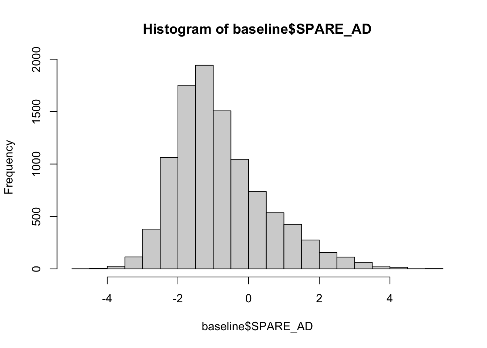
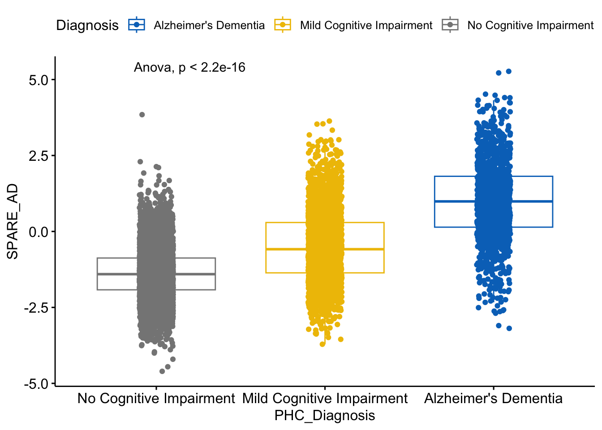
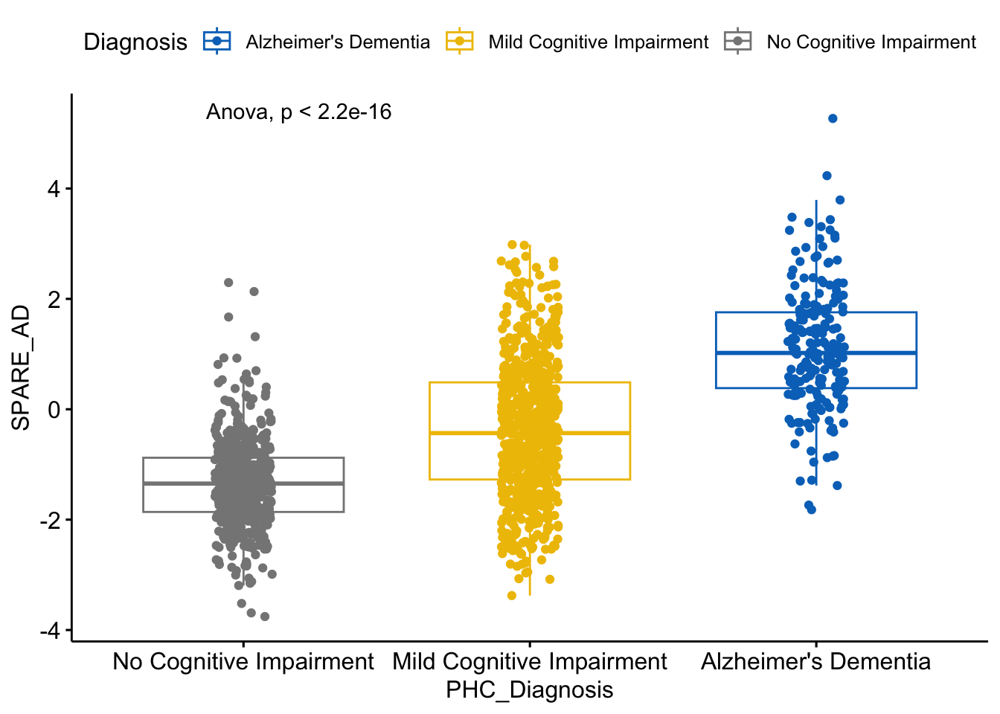
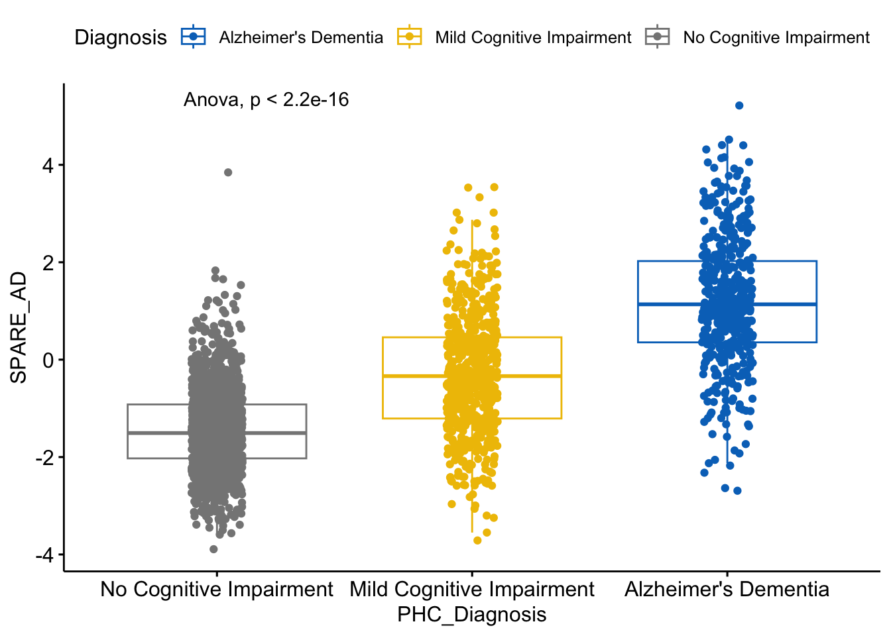
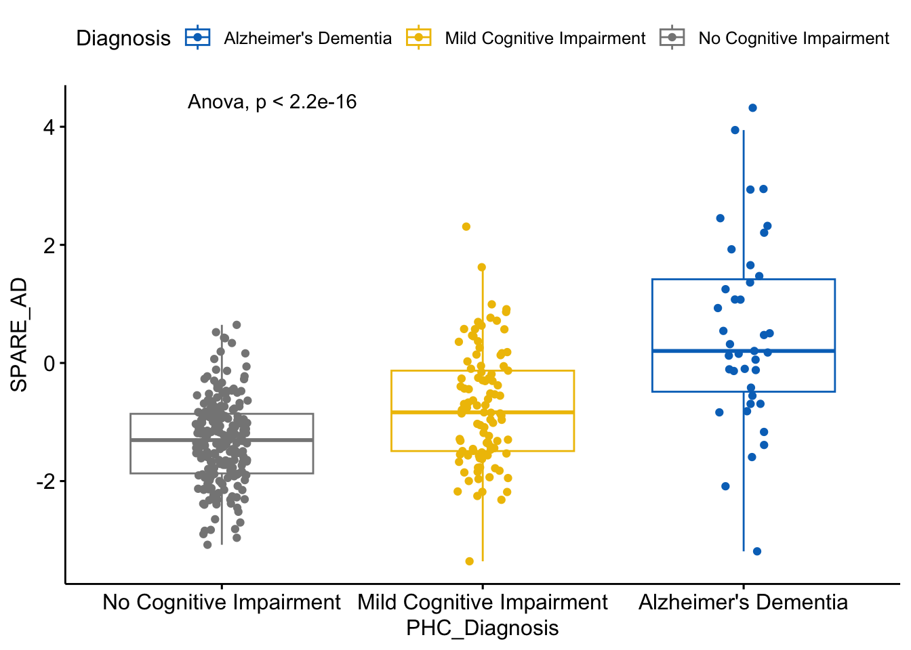

.bggreen {
background-color: rgb(206, 237, 202);
}PHC_Visit frequency table:
##
## 1 2 3 4 5 6 7 8 9 10 11 12 13 14 15 16
## 5884 2531 2459 1756 1299 1003 792 511 421 243 198 142 107 70 40 34
## 17 18 19 20 21 22 23 24 26 <NA>
## 21 16 6 6 3 3 1 2 1 5283Get number of individuals
print(length(unique(raw$Phenotype_ID)))## [1] 10181Subset and get baseline data
## detect individuals with same age at different PHC visit
dupAge <- raw %>%
select(Phenotype_ID,PHC_Age_T1) %>%
group_by(Phenotype_ID,PHC_Age_T1) %>%
filter(n()>1)
print("Inviduals with duplicate PHC_Age_T1")## [1] "Inviduals with duplicate PHC_Age_T1"print(raw[raw$Phenotype_ID %in% dupAge$Phenotype_ID,])## Study Phenotype_ID Study_Visit PHC_SCANDATE PHC_Visit PHC_Sex
## 14409 NACC NACC559323 1 <NA> NA 1
## 14410 NACC NACC559323 5 <NA> NA 1
## 14411 NACC NACC559323 7 <NA> 7 1
## 20114 WHICAP W62307 <NA> 2012-11-14 NA 1
## 20115 WHICAP W62307 <NA> 2012-11-14 NA 1
## 20116 WHICAP W62307 <NA> 2018-01-31 NA 1
## 20427 WHICAP W82050 <NA> 2011-05-11 1 2
## 20428 WHICAP W82050 <NA> 2011-05-11 1 2
## PHC_Education PHC_Ethnicity PHC_Race PHC_Age_T1 PHC_Diagnosis
## 14409 16 2 5 71.58385 1
## 14410 16 2 5 71.58385 1
## 14411 16 2 5 73.58248 1
## 20114 14 2 3 84.87064 1
## 20115 14 2 3 84.87064 1
## 20116 14 2 3 90.08350 1
## 20427 12 1 6 69.35524 1
## 20428 12 1 6 69.35524 1
## PHC_ScannerBatchName SPARE_AD SPARE_BA
## 14409 SIEMENS_3.0 -0.5219044 52.99583
## 14410 SIEMENS_3.0 -1.6240788 41.40565
## 14411 SIEMENS_3.0 -1.9693380 45.40364
## 20114 Philips3T -0.6518568 69.67572
## 20115 Philips3T 0.1625183 74.63609
## 20116 Philips3T 0.1583078 75.29285
## 20427 Philips3T 0.1786114 75.55633
## 20428 Philips3T 1.9573671 78.61181## remove those people
raw_nodup <- raw[raw$Phenotype_ID %!in% dupAge$Phenotype_ID,]
## extract baseline data
tmp <- raw_nodup %>%
select(Phenotype_ID,PHC_Age_T1) %>%
group_by(Phenotype_ID) %>%
arrange(PHC_Age_T1) %>%
mutate(last = ifelse(row_number() == last(row_number()), T, F)) %>%
mutate(first = ifelse(row_number() == first(row_number()), T, F)) %>%
ungroup()
tmp <- merge(tmp,raw_nodup, by=c("Phenotype_ID","PHC_Age_T1"))
## get number of individuals with only one observation
ppID_oneObs <- tmp[tmp$last == T & tmp$first == T,]
table(ppID_oneObs$Study)##
## ADNI NACC ROSMAPMARS WHICAP WRAP
## 551 3796 462 678 205baseline <- tmp[tmp$first==T,]
paste0("Baseline count: ", nrow(baseline))## [1] "Baseline count: 10178"paste0("Number of individuals: ", length(unique(baseline$Phenotype_ID)))## [1] "Number of individuals: 10178"table1(~ Sex + PHC_Age_T1 + SPARE_AD + SPARE_BA + Race + PHC_Education + Diagnosis | Study, data=baseline)| ADNI (N=2532) |
NACC (N=4861) |
ROSMAPMARS (N=1182) |
WHICAP (N=991) |
WRAP (N=612) |
Overall (N=10178) |
|
|---|---|---|---|---|---|---|
| Sex | ||||||
| Female | 1221 (48.2%) | 2858 (58.8%) | 917 (77.6%) | 603 (60.8%) | 424 (69.3%) | 6023 (59.2%) |
| Male | 1311 (51.8%) | 2003 (41.2%) | 265 (22.4%) | 388 (39.2%) | 188 (30.7%) | 4155 (40.8%) |
| PHC_Age_T1 | ||||||
| Mean (SD) | 72.9 (7.42) | 71.1 (10.6) | 79.5 (7.24) | 75.5 (6.44) | 62.5 (7.39) | 72.4 (9.71) |
| Median [Min, Max] | 72.9 [50.5, 91.5] | 71.8 [21.5, 100] | 79.8 [58.8, 100] | 74.4 [62.5, 98.2] | 62.8 [43.2, 83.8] | 72.8 [21.5, 100] |
| SPARE_AD | ||||||
| Mean (SD) | -0.557 (1.33) | -0.725 (1.41) | -0.910 (1.01) | -1.19 (0.817) | -1.60 (0.790) | -0.803 (1.30) |
| Median [Min, Max] | -0.790 [-3.79, 5.27] | -1.02 [-4.00, 5.22] | -1.01 [-4.45, 3.18] | -1.27 [-3.72, 2.33] | -1.60 [-4.60, 1.29] | -1.05 [-4.60, 5.27] |
| SPARE_BA | ||||||
| Mean (SD) | 62.2 (11.8) | 60.1 (14.5) | 65.8 (11.5) | 60.7 (10.2) | 47.9 (10.0) | 60.6 (13.5) |
| Median [Min, Max] | 61.8 [27.4, 104] | 60.3 [-3.56, 109] | 65.8 [32.8, 105] | 59.9 [28.4, 99.3] | 47.5 [19.7, 81.5] | 60.5 [-3.56, 109] |
| Race | ||||||
| American Indian or Alaska Native | 4 (0.2%) | 41 (0.8%) | 3 (0.3%) | 0 (0%) | 6 (1.0%) | 54 (0.5%) |
| Asian | 60 (2.4%) | 80 (1.6%) | 5 (0.4%) | 0 (0%) | 1 (0.2%) | 146 (1.4%) |
| Black or African American | 198 (7.8%) | 609 (12.5%) | 271 (22.9%) | 335 (33.8%) | 26 (4.2%) | 1439 (14.1%) |
| Native Hawaiian or Other Pacific Islander | 2 (0.1%) | 2 (0.0%) | 1 (0.1%) | 0 (0%) | 0 (0%) | 5 (0.0%) |
| Other, Unknown, or More than one race | 48 (1.9%) | 44 (0.9%) | 8 (0.7%) | 412 (41.6%) | 3 (0.5%) | 515 (5.1%) |
| White | 2220 (87.7%) | 4085 (84.0%) | 894 (75.6%) | 244 (24.6%) | 576 (94.1%) | 8019 (78.8%) |
| PHC_Education | ||||||
| Mean (SD) | 16.1 (2.71) | 15.5 (3.21) | 15.8 (3.32) | 12.2 (4.69) | 16.4 (2.80) | 15.4 (3.44) |
| Median [Min, Max] | 16.0 [4.00, 20.0] | 16.0 [0, 25.0] | 16.0 [3.00, 30.0] | 12.0 [0, 20.0] | 16.0 [10.0, 29.0] | 16.0 [0, 30.0] |
| Missing | 0 (0%) | 9 (0.2%) | 0 (0%) | 3 (0.3%) | 1 (0.2%) | 13 (0.1%) |
| Diagnosis | ||||||
| Alzheimer's Dementia | 425 (16.8%) | 834 (17.2%) | 14 (1.2%) | 46 (4.6%) | 3 (0.5%) | 1322 (13.0%) |
| Mild Cognitive Impairment | 1140 (45.0%) | 1139 (23.4%) | 222 (18.8%) | 174 (17.6%) | 21 (3.4%) | 2696 (26.5%) |
| No Cognitive Impairment | 939 (37.1%) | 2587 (53.2%) | 941 (79.6%) | 734 (74.1%) | 586 (95.8%) | 5787 (56.9%) |
| Missing | 28 (1.1%) | 301 (6.2%) | 5 (0.4%) | 37 (3.7%) | 2 (0.3%) | 373 (3.7%) |

p <- ggboxplot(baseline[!is.na(baseline$PHC_Diagnosis),], x = "PHC_Diagnosis", y = "SPARE_AD",
color = "Diagnosis", palette = "jco",
add = "jitter")
p + stat_compare_means(method = "anova") # Add p-value
File path: /nfs/DATA/ADNI/GWAS/Imputed/TOPMed/Cleaned
| Imputed PLINK File | PCs | Race | Variants | Participants |
|---|---|---|---|---|
| ADNI_NHW_imputed_final | ADNI_NHW_imputed_final_shorter_bimids_pruned.pca.evec | NHW | 7,953,372 | 1414 |
| ADNI_NHB_imputed_final_nooutliers | ADNI_NHB_imputed_final_nooutliers_shorter_bimids_pruned.pca.evec | NHB | 8,028,923 | 58 |
Data Preparation Code at ACCRE and local
## mkdir
cd /data/h_vmac/zhanm32
mkdir mkdir SPARE_AD
cd SPARE_AD
mkdir DATA
mkdir CODE
mkdir OUTPUT
mkdir DATA/ADNI
mkdir DATA/NACC
mkdir DATA/ROSMAP
## copy geno data and PCs
cp /nfs/DATA/ADNI/GWAS/Imputed/TOPMed/Cleaned/ADNI_NHW_imputed_final.* /data/h_vmac/zhanm32/SPARE_AD/DATA/ADNI
cp /nfs/DATA/ADNI/GWAS/Imputed/TOPMed/Cleaned/ADNI_NHW_imputed_final_shorter_bimids_pruned.pca.evec /data/h_vmac/zhanm32/SPARE_AD/DATA/ADNI
## download .fam and PC file to local (/Users/mengnazhang/Desktop/SPARE-AD/Data/Raw/geno) to generate final pheno_covs file
## code: /Users/mengnazhang/Documents/jinguameng.github.io/descriptive_analysis.Rmd
## remove the first line of PC file
cd /Users/mengnazhang/Desktop/SPARE-AD/Data/Raw/geno
tail -n +2 ADNI_NHW_imputed_final_shorter_bimids_pruned.pca.evec > ADNI_NHW_imputed_final_shorter_bimids_pruned.pca.nohead.evecPrepare pheno_covs file
fam_ADNI <- read.table("/Users/mengnazhang/Desktop/SPARE-AD/Data/Raw/geno/ADNI_NHW_imputed_final.fam",header = F)
pc_ADNI <- read.table("/Users/mengnazhang/Desktop/SPARE-AD/Data/Raw/geno/ADNI_NHW_imputed_final_shorter_bimids_pruned.pca.nohead.evec",header = F)
## subset .fam file and rename the columns
fam_ADNI <- fam_ADNI[,c(1:2)]
colnames(fam_ADNI) <- c("FID","IID")
fam_ADNI$FIDIID <- paste0(fam_ADNI$FID,":",fam_ADNI$IID)
## subset PCs file and rename the columns
pc_ADNI <- pc_ADNI[,c(1:11)]
colnames(pc_ADNI) <- c("FIDIID",paste0("PC",seq(1:10)))
## merge .fam file and PCs file
tmp <- merge(fam_ADNI,pc_ADNI,by="FIDIID")
## merge with pheno data
baseline_ADNI <- subset(baseline,baseline$Study == "ADNI")
pheno_ADNI <- merge(tmp,baseline_ADNI,by.x = "IID",by.y = "Phenotype_ID")
## reorder the columns
pheno_ADNI <- pheno_ADNI[,c(3,1,2,4:32)]
## save the file
write.table(pheno_ADNI,"/Users/mengnazhang/Desktop/SPARE-AD/Data/Clean/ADNI_clean_pheno_covs.txt",col.names=T,row.names = F,quote = F,sep="\t")
paste0("Number of observations of final cleaned pheno_covs file for ADNI non-hispanic white: ", nrow(pheno_ADNI))## [1] "Number of observations of final cleaned pheno_covs file for ADNI non-hispanic white: 1391"| Alzheimer's Dementia (N=204) |
Mild Cognitive Impairment (N=659) |
No Cognitive Impairment (N=528) |
Overall (N=1391) |
|
|---|---|---|---|---|
| factor(Sex) | ||||
| Female | 89 (43.6%) | 254 (38.5%) | 277 (52.5%) | 620 (44.6%) |
| Male | 115 (56.4%) | 405 (61.5%) | 251 (47.5%) | 771 (55.4%) |
| PHC_Age_T1 | ||||
| Mean (SD) | 75.3 (8.14) | 73.4 (7.57) | 73.6 (5.99) | 73.7 (7.13) |
| Median [Min, Max] | 76.0 [55.3, 90.9] | 73.7 [54.6, 91.5] | 73.0 [55.8, 90.3] | 73.6 [54.6, 91.5] |
| SPARE_AD | ||||
| Mean (SD) | 1.10 (1.12) | -0.366 (1.26) | -1.33 (0.800) | -0.518 (1.35) |
| Median [Min, Max] | 1.02 [-1.82, 5.27] | -0.432 [-3.38, 2.98] | -1.35 [-3.76, 2.30] | -0.762 [-3.76, 5.27] |
| SPARE_BA | ||||
| Mean (SD) | 70.7 (10.5) | 63.5 (11.8) | 58.4 (9.74) | 62.6 (11.6) |
| Median [Min, Max] | 70.6 [40.7, 95.3] | 64.1 [27.4, 102] | 58.1 [33.4, 92.3] | 62.4 [27.4, 102] |
| PHC_Education | ||||
| Mean (SD) | 15.1 (3.03) | 16.0 (2.81) | 16.6 (2.49) | 16.1 (2.77) |
| Median [Min, Max] | 16.0 [6.00, 20.0] | 16.0 [6.00, 20.0] | 16.0 [6.00, 20.0] | 16.0 [6.00, 20.0] |

Upload ADNI_clean_pheno_covs.txt file to ACCRE: /data/h_vmac/zhanm32/SPARE_AD/DATA/ADNI/
File path: /nfs/DATA/NACC/GWAS/Imputed/TOPMed/Cleaned
| Imputed PLINK File | PCs | Race | Variants | Participants |
|---|---|---|---|---|
| NACC_NHW_imputed_final | NACC_NHW_imputed_final_shorter_bimids_pruned.pca.evec | NHW | 7,432,354 | 22572 |
| NACC_NHB_imputed_final_nooutliers | NACC_NHB_imputed_final_nooutliers_shorter_bimids_pruned.pca.evec | NHB | 6,007,563 | 2919 |
Data Preparation Code at ACCRE and local
## copy geno data and PCs
cp /nfs/DATA/NACC/GWAS/Imputed/TOPMed/Cleaned/NACC_NHW_imputed_final.* /data/h_vmac/zhanm32/SPARE_AD/DATA/NACC
cp /nfs/DATA/NACC/GWAS/Imputed/TOPMed/Cleaned/NACC_NHW_imputed_final_shorter_bimids_pruned.pca.evec /data/h_vmac/zhanm32/SPARE_AD/DATA/NACC
cp /nfs/DATA/NACC/GWAS/Imputed/TOPMed/Cleaned/NACC_NHB_imputed_final_nooutliers.* /data/h_vmac/zhanm32/SPARE_AD/DATA/NACC
cp /nfs/DATA/NACC/GWAS/Imputed/TOPMed/Cleaned/NACC_NHB_imputed_final_nooutliers_shorter_bimids_pruned.pca.evec /data/h_vmac/zhanm32/SPARE_AD/DATA/NACC
## download .fam and PC file to local (/Users/mengnazhang/Desktop/SPARE-AD/Data/Raw/geno) to generate final pheno_covs file
## code: /Users/mengnazhang/Documents/jinguameng.github.io/descriptive_analysis.Rmd
## remove the first line of PC file
cd /Users/mengnazhang/Desktop/SPARE-AD/Data/Raw/geno
tail -n +2 NACC_NHB_imputed_final_nooutliers_shorter_bimids_pruned.pca.evec > NACC_NHB_imputed_final_nooutliers_shorter_bimids_pruned.pca.nohead.evec
tail -n +2 NACC_NHW_imputed_final_shorter_bimids_pruned.pca.evec > NACC_NHW_imputed_final_shorter_bimids_pruned.pca.nohead.evecPrepare pheno_covs file
fam_NACC_NHW <- read.table("/Users/mengnazhang/Desktop/SPARE-AD/Data/Raw/geno/NACC_NHW_imputed_final.fam",header = F)
pc_NACC_NHW <- read.table("/Users/mengnazhang/Desktop/SPARE-AD/Data/Raw/geno/NACC_NHW_imputed_final_shorter_bimids_pruned.pca.nohead.evec",header = F)
fam_NACC_NHB <- read.table("/Users/mengnazhang/Desktop/SPARE-AD/Data/Raw/geno/NACC_NHB_imputed_final_nooutliers.fam",header = F)
pc_NACC_NHB <- read.table("/Users/mengnazhang/Desktop/SPARE-AD/Data/Raw/geno/NACC_NHB_imputed_final_nooutliers_shorter_bimids_pruned.pca.nohead.evec",header = F)
## subset .fam file and rename the columns
fam_NACC_NHW <- fam_NACC_NHW[,c(1:2)]
colnames(fam_NACC_NHW) <- c("FID","IID")
fam_NACC_NHW$FIDIID <- paste0(fam_NACC_NHW$FID,":",fam_NACC_NHW$IID)
fam_NACC_NHB <- fam_NACC_NHB[,c(1:2)]
colnames(fam_NACC_NHB) <- c("FID","IID")
fam_NACC_NHB$FIDIID <- paste0(fam_NACC_NHB$FID,":",fam_NACC_NHB$IID)
## subset PCs file and rename the columns
pc_NACC_NHW <- pc_NACC_NHW[,c(1:11)]
colnames(pc_NACC_NHW) <- c("FIDIID",paste0("PC",seq(1:10)))
pc_NACC_NHB <- pc_NACC_NHB[,c(1:11)]
colnames(pc_NACC_NHB) <- c("FIDIID",paste0("PC",seq(1:10)))
## merge .fam file and PCs file
tmp_NHW <- merge(fam_NACC_NHW,pc_NACC_NHW,by="FIDIID")
tmp_NHB <- merge(fam_NACC_NHB,pc_NACC_NHB,by="FIDIID")
## merge with pheno data
baseline_NACC <- subset(baseline,baseline$Study == "NACC")
pheno_NACC_NHW <- merge(tmp_NHW,baseline_NACC,by.x = "IID",by.y = "Phenotype_ID")
pheno_NACC_NHB <- merge(tmp_NHB,baseline_NACC,by.x = "IID",by.y = "Phenotype_ID")
## reorder the columns
pheno_NACC_NHW <- pheno_NACC_NHW[,c(3,1,2,4:32)]
pheno_NACC_NHB <- pheno_NACC_NHB[,c(3,1,2,4:32)]
## save the file
write.table(pheno_NACC_NHW,"/Users/mengnazhang/Desktop/SPARE-AD/Data/Clean/NACC_NHW_clean_pheno_covs.txt",col.names=T,row.names = F,quote = F,sep="\t")
write.table(pheno_NACC_NHB,"/Users/mengnazhang/Desktop/SPARE-AD/Data/Clean/NACC_NHB_clean_pheno_covs.txt",col.names=T,row.names = F,quote = F,sep="\t")
paste0("Number of observations of final cleaned pheno_covs file for NACC Non-Hispanic white: ", nrow(pheno_NACC_NHW))## [1] "Number of observations of final cleaned pheno_covs file for NACC Non-Hispanic white: 2612"paste0("Number of observations of final cleaned pheno_covs file for NACC Non-Hispanic black: ", nrow(pheno_NACC_NHB))## [1] "Number of observations of final cleaned pheno_covs file for NACC Non-Hispanic black: 372"##
## Alzheimer's Dementia Mild Cognitive Impairment No Cognitive Impairment
## 462 612 1386
## <NA>
## 152| Alzheimer's Dementia (N=462) |
Mild Cognitive Impairment (N=612) |
No Cognitive Impairment (N=1386) |
Overall (N=2460) |
|
|---|---|---|---|---|
| factor(Sex) | ||||
| Female | 208 (45.0%) | 266 (43.5%) | 879 (63.4%) | 1353 (55.0%) |
| Male | 254 (55.0%) | 346 (56.5%) | 507 (36.6%) | 1107 (45.0%) |
| PHC_Age_T1 | ||||
| Mean (SD) | 74.3 (8.99) | 74.2 (9.03) | 69.9 (11.0) | 71.8 (10.4) |
| Median [Min, Max] | 75.2 [43.5, 94.4] | 75.0 [27.7, 96.6] | 70.7 [21.9, 100] | 72.6 [21.9, 100] |
| SPARE_AD | ||||
| Mean (SD) | 1.19 (1.33) | -0.305 (1.24) | -1.44 (0.849) | -0.662 (1.46) |
| Median [Min, Max] | 1.14 [-2.69, 5.22] | -0.338 [-3.71, 3.54] | -1.51 [-3.89, 3.84] | -0.959 [-3.89, 5.22] |
| SPARE_BA | ||||
| Mean (SD) | 72.4 (12.1) | 65.2 (12.6) | 55.1 (13.5) | 60.9 (14.8) |
| Median [Min, Max] | 71.9 [17.0, 106] | 66.0 [19.3, 108] | 55.3 [10.5, 93.8] | 61.4 [10.5, 108] |
| PHC_Education | ||||
| Mean (SD) | 15.5 (2.98) | 16.0 (2.77) | 16.3 (2.61) | 16.1 (2.74) |
| Median [Min, Max] | 16.0 [6.00, 22.0] | 16.0 [4.00, 23.0] | 16.0 [0, 25.0] | 16.0 [0, 25.0] |
| Missing | 0 (0%) | 1 (0.2%) | 2 (0.1%) | 3 (0.1%) |

##
## Alzheimer's Dementia Mild Cognitive Impairment No Cognitive Impairment
## 39 101 212
## <NA>
## 20| Alzheimer's Dementia (N=39) |
Mild Cognitive Impairment (N=101) |
No Cognitive Impairment (N=212) |
Overall (N=352) |
|
|---|---|---|---|---|
| factor(Sex) | ||||
| Female | 25 (64.1%) | 72 (71.3%) | 169 (79.7%) | 266 (75.6%) |
| Male | 14 (35.9%) | 29 (28.7%) | 43 (20.3%) | 86 (24.4%) |
| PHC_Age_T1 | ||||
| Mean (SD) | 77.7 (8.41) | 74.6 (8.08) | 72.1 (7.17) | 73.4 (7.79) |
| Median [Min, Max] | 77.7 [61.4, 95.0] | 74.7 [59.7, 95.6] | 71.2 [56.7, 92.4] | 72.6 [56.7, 95.6] |
| SPARE_AD | ||||
| Mean (SD) | 0.526 (1.59) | -0.757 (0.972) | -1.33 (0.713) | -0.959 (1.09) |
| Median [Min, Max] | 0.203 [-3.19, 4.32] | -0.836 [-3.36, 2.31] | -1.31 [-3.08, 0.645] | -1.11 [-3.36, 4.32] |
| SPARE_BA | ||||
| Mean (SD) | 68.8 (12.5) | 61.8 (10.5) | 56.7 (10.3) | 59.5 (11.3) |
| Median [Min, Max] | 71.0 [37.5, 92.5] | 61.3 [35.6, 88.5] | 56.7 [20.9, 92.4] | 58.9 [20.9, 92.5] |
| PHC_Education | ||||
| Mean (SD) | 13.4 (2.93) | 15.0 (2.76) | 14.9 (2.80) | 14.8 (2.84) |
| Median [Min, Max] | 12.0 [8.00, 20.0] | 16.0 [7.00, 22.0] | 14.0 [5.00, 22.0] | 14.0 [5.00, 22.0] |
| Missing | 1 (2.6%) | 0 (0%) | 0 (0%) | 1 (0.3%) |

Upload NACC_NHW_clean_pheno_covs.txt and NACC_NHB_clean_pheno_covs.txt files to ACCRE: /data/h_vmac/zhanm32/SPARE_AD/DATA/NACC/
File path: /nfs/DATA/ROSMAP/GWAS/Imputed/TOPMed/Cleaned
| Imputed PLINK File | PCs | Race | Variants | Participants |
|---|---|---|---|---|
| ROSMAP_NHW_imputed_final | ROSMAP_NHW_imputed_final_shorter_bimids_pruned.pca.evec | NHW | 7,624,508 | 2120 |
| ROSMAP_NHB_final_updatedIDs_nooutliers | ROSMAP_NHB_final_updatedIDs_nooutliers_shorter_bimids_pruned.pca.evec | NHB | 5,120,071 | 532 |
Data Preparation Code at ACCRE and local
## copy geno data and PCs
cp /nfs/DATA/ROSMAP/GWAS/Imputed/TOPMed/Cleaned/ROSMAP_NHW_imputed_final.* /data/h_vmac/zhanm32/SPARE_AD/DATA/ROSMAP
cp /nfs/DATA/ROSMAP/GWAS/Imputed/TOPMed/Cleaned/ROSMAP_NHW_imputed_final_shorter_bimids_pruned.pca.evec /data/h_vmac/zhanm32/SPARE_AD/DATA/ROSMAP
cp /nfs/DATA/ROSMAP/GWAS/Imputed/TOPMed/Cleaned/ROSMAP_NHB_final_updatedIDs_nooutliers.* /data/h_vmac/zhanm32/SPARE_AD/DATA/ROSMAP
cp /nfs/DATA/ROSMAP/GWAS/Imputed/TOPMed/Cleaned/ROSMAP_NHB_final_updatedIDs_nooutliers_shorter_bimids_pruned.pca.evec /data/h_vmac/zhanm32/SPARE_AD/DATA/ROSMAP
## download .fam and PC file to local (/Users/mengnazhang/Desktop/SPARE-AD/Data/Raw/geno) to generate final pheno_covs file
## code: /Users/mengnazhang/Documents/jinguameng.github.io/descriptive_analysis.Rmd
## remove the first line of PC file
cd /Users/mengnazhang/Desktop/SPARE-AD/Data/Raw/geno
tail -n +2 ROSMAP_NHB_final_updatedIDs_nooutliers_shorter_bimids_pruned.pca.evec > ROSMAP_NHB_final_updatedIDs_nooutliers_shorter_bimids_pruned.pca.nohead.evec
tail -n +2 ROSMAP_NHW_imputed_final_shorter_bimids_pruned.pca.evec > ROSMAP_NHW_imputed_final_shorter_bimids_pruned.pca.nohead.evecPrepare pheno_covs file
fam_ROSMAP_NHW <- read.table("/Users/mengnazhang/Desktop/SPARE-AD/Data/Raw/geno/ROSMAP_NHW_imputed_final.fam",header = F)
pc_ROSMAP_NHW <- read.table("/Users/mengnazhang/Desktop/SPARE-AD/Data/Raw/geno/ROSMAP_NHW_imputed_final_shorter_bimids_pruned.pca.nohead.evec",header = F)
fam_ROSMAP_NHB <- read.table("/Users/mengnazhang/Desktop/SPARE-AD/Data/Raw/geno/ROSMAP_NHB_final_updatedIDs_nooutliers.fam",header = F)
pc_ROSMAP_NHB <- read.table("/Users/mengnazhang/Desktop/SPARE-AD/Data/Raw/geno/ROSMAP_NHB_final_updatedIDs_nooutliers_shorter_bimids_pruned.pca.nohead.evec",header = F)
## subset .fam file and rename the columns
fam_ROSMAP_NHW <- fam_ROSMAP_NHW[,c(1:2)]
colnames(fam_ROSMAP_NHW) <- c("FID","IID")
fam_ROSMAP_NHW$FIDIID <- paste0(fam_ROSMAP_NHW$FID,":",fam_ROSMAP_NHW$IID)
fam_ROSMAP_NHB <- fam_ROSMAP_NHB[,c(1:2)]
colnames(fam_ROSMAP_NHB) <- c("FID","IID")
fam_ROSMAP_NHB$FIDIID <- paste0(fam_ROSMAP_NHB$FID,":",fam_ROSMAP_NHB$IID)
## subset PCs file and rename the columns
pc_ROSMAP_NHW <- pc_ROSMAP_NHW[,c(1:11)]
colnames(pc_ROSMAP_NHW) <- c("FIDIID",paste0("PC",seq(1:10)))
pc_ROSMAP_NHB <- pc_ROSMAP_NHB[,c(1:11)]
colnames(pc_ROSMAP_NHB) <- c("FIDIID",paste0("PC",seq(1:10)))
## merge .fam file and PCs file
tmp_NHW <- merge(fam_ROSMAP_NHW,pc_ROSMAP_NHW,by="FIDIID") ## 532
tmp_NHB <- merge(fam_ROSMAP_NHB,pc_ROSMAP_NHB,by="FIDIID") ## 2120
## merge with pheno data
baseline_ROSMAP <- subset(baseline,baseline$Study == "ROSMAPMARS")
pheno_ROSMAP_NHW <- merge(tmp_NHW,baseline_ROSMAP,by.x = "IID",by.y = "Phenotype_ID")
pheno_ROSMAP_NHB <- merge(tmp_NHB,baseline_ROSMAP,by.x = "IID",by.y = "Phenotype_ID")
## reorder the columns
pheno_ROSMAP_NHW <- pheno_ROSMAP_NHW[,c(3,1,2,4:32)]
pheno_ROSMAP_NHB <- pheno_ROSMAP_NHB[,c(3,1,2,4:32)]
## save the file
write.table(pheno_ROSMAP_NHW,"/Users/mengnazhang/Desktop/SPARE-AD/Data/Clean/ROSMAP_NHW_clean_pheno_covs.txt",col.names=T,row.names = F,quote = F,sep="\t")
write.table(pheno_ROSMAP_NHB,"/Users/mengnazhang/Desktop/SPARE-AD/Data/Clean/ROSMAP_NHB_clean_pheno_covs.txt",col.names=T,row.names = F,quote = F,sep="\t")
paste0("Number of observations of final cleaned pheno_covs file for ROSMAP Non-Hispanic white: ", nrow(pheno_ROSMAP_NHW))## [1] "Number of observations of final cleaned pheno_covs file for ROSMAP Non-Hispanic white: 505"paste0("Number of observations of final cleaned pheno_covs file for ROSMAP Non-Hispanic black: ", nrow(pheno_ROSMAP_NHB))## [1] "Number of observations of final cleaned pheno_covs file for ROSMAP Non-Hispanic black: 136"##
## Alzheimer's Dementia Mild Cognitive Impairment No Cognitive Impairment
## 5 95 405| Alzheimer's Dementia (N=5) |
Mild Cognitive Impairment (N=95) |
No Cognitive Impairment (N=405) |
Overall (N=505) |
|
|---|---|---|---|---|
| factor(Sex) | ||||
| Female | 4 (80.0%) | 73 (76.8%) | 312 (77.0%) | 389 (77.0%) |
| Male | 1 (20.0%) | 22 (23.2%) | 93 (23.0%) | 116 (23.0%) |
| PHC_Age_T1 | ||||
| Mean (SD) | 87.1 (4.68) | 84.4 (5.76) | 80.1 (7.14) | 81.0 (7.11) |
| Median [Min, Max] | 84.9 [82.7, 94.4] | 84.4 [71.6, 99.8] | 80.6 [58.8, 100] | 81.8 [58.8, 100] |
| SPARE_AD | ||||
| Mean (SD) | 1.39 (0.859) | -0.295 (1.14) | -0.971 (0.931) | -0.820 (1.03) |
| Median [Min, Max] | 1.33 [0.177, 2.58] | -0.396 [-3.17, 3.01] | -1.03 [-3.32, 2.10] | -0.925 [-3.32, 3.01] |
| SPARE_BA | ||||
| Mean (SD) | 83.0 (5.90) | 73.4 (10.5) | 65.8 (11.4) | 67.4 (11.7) |
| Median [Min, Max] | 83.5 [74.2, 89.9] | 73.6 [48.8, 105] | 65.6 [37.4, 104] | 67.6 [37.4, 105] |
| PHC_Education | ||||
| Mean (SD) | 14.0 (2.45) | 15.3 (2.89) | 16.0 (3.24) | 15.8 (3.18) |
| Median [Min, Max] | 14.0 [12.0, 18.0] | 16.0 [8.00, 25.0] | 16.0 [6.00, 30.0] | 16.0 [6.00, 30.0] |
##
## Alzheimer's Dementia Mild Cognitive Impairment No Cognitive Impairment
## 1 20 115| Alzheimer's Dementia (N=1) |
Mild Cognitive Impairment (N=20) |
No Cognitive Impairment (N=115) |
Overall (N=136) |
|
|---|---|---|---|---|
| factor(Sex) | ||||
| Female | 1 (100%) | 15 (75.0%) | 100 (87.0%) | 116 (85.3%) |
| Male | 0 (0%) | 5 (25.0%) | 15 (13.0%) | 20 (14.7%) |
| PHC_Age_T1 | ||||
| Mean (SD) | 83.5 (NA) | 78.7 (6.68) | 77.0 (5.93) | 77.3 (6.05) |
| Median [Min, Max] | 83.5 [83.5, 83.5] | 78.8 [63.9, 89.2] | 77.0 [64.4, 92.9] | 77.5 [63.9, 92.9] |
| SPARE_AD | ||||
| Mean (SD) | 2.69 (NA) | 0.0950 (1.09) | -1.12 (0.742) | -0.910 (0.956) |
| Median [Min, Max] | 2.69 [2.69, 2.69] | -0.0302 [-1.77, 3.18] | -1.11 [-3.25, 0.583] | -1.01 [-3.25, 3.18] |
| SPARE_BA | ||||
| Mean (SD) | 78.4 (NA) | 68.4 (7.75) | 62.4 (9.91) | 63.4 (9.88) |
| Median [Min, Max] | 78.4 [78.4, 78.4] | 69.9 [46.5, 82.2] | 62.9 [34.8, 90.3] | 63.6 [34.8, 90.3] |
| PHC_Education | ||||
| Mean (SD) | 16.0 (NA) | 15.3 (3.08) | 15.3 (3.37) | 15.3 (3.31) |
| Median [Min, Max] | 16.0 [16.0, 16.0] | 15.5 [8.00, 20.0] | 15.0 [8.00, 30.0] | 15.0 [8.00, 30.0] |
Upload ROSMAP_NHW_clean_pheno_covs.txt and ROSMAP_NHB_clean_pheno_covs.txt files to ACCRE: /data/h_vmac/zhanm32/SPARE_AD/DATA/ROSMAP/